A reproducible classification pipeline and a single-runtime Vercel deployment
An academic study of angiographic coronary artery disease presence in the UCI Cleveland cohort, with leakage-safe model selection, a single held-out evaluation, local explanations, and a Next.js inference application.
Coronary artery disease is a major cause of morbidity and mortality, and structured clinical data contain useful diagnostic signal even when advanced imaging is unavailable. This project studies supervised classification of angiographic coronary artery disease presence from the 13 original predictors of the UCI Cleveland heart-disease dataset. The work is designed around three constraints: methodological reproducibility, protection of the untouched holdout, and deployment as one self-contained web application.
Three candidate classifiers — logistic regression, random forest, and decision tree — were trained inside complete scikit-learn pipelines containing median or most-frequent imputation, standardisation, and one-hot encoding. Hyperparameters were tuned with five-fold stratified cross-validation on the 242-record training partition. The model was selected on mean cross-validated F1, with cross-validated ROC-AUC as the tie-breaker, before the 61-record holdout was opened. Logistic regression with C = 0.1 achieved the best cross-validated F1 (0.830 ± 0.026). On the single holdout evaluation it obtained accuracy 0.8852, disease-class precision 0.8387, recall 0.9286, F1 0.8814, ROC-AUC 0.9610, and Brier score 0.0869, with a confusion matrix of 28 true negatives, 5 false positives, 2 false negatives, and 26 true positives.
The fitted scikit-learn pipeline remains the training source of truth. Its preprocessing parameters and logistic coefficients are exported to a versioned JSON bundle, and inference is implemented in TypeScript inside Next.js route handlers. A parity test compares the TypeScript output with scikit-learn on all 303 cohort records. The resulting single application serves the assessment interface, a model-insights dashboard, an API reference, and three API routes on Vercel without a Python runtime. The report discusses the modelling decisions, the interpretation of the observed metrics, the local explanation mechanism, threats to validity, and the boundary between an educational classifier and clinical decision support.
A small, well-understood clinical dataset is a useful place to study the full path from a modelling claim to a deployable system — provided the claim is stated carefully.
Cardiovascular disease remains one of the leading contributors to premature death and long-term disability worldwide. Coronary artery disease, the narrowing or obstruction of the coronary arteries that supply the myocardium, is frequently investigated through a combination of symptoms, electrocardiography, cardiac stress testing, and coronary angiography. The UCI Cleveland heart-disease dataset was assembled in 1988 to study the diagnostic value of non-invasive findings relative to angiographic results [1, 2]. It remains a standard teaching dataset because it combines a modest number of interpretable variables with a clinically meaningful binary target.
The dataset is attractive for an academic project, but it is also easy to misuse. A high accuracy value on a small, single-centre cohort does not establish clinical validity. The target records whether angiographic disease was present at examination, not whether a person will develop disease later. Features such as maximum heart rate and ST depression are exercise-test measurements, not general-purpose risk factors. A responsible report therefore needs to distinguish three things clearly: what the model estimates, how the estimate was validated, and what the estimate must not be used for.
This project addresses that distinction as an engineering problem rather than only a modelling exercise. The model is trained once, selected without touching the holdout, and evaluated once. The complete preprocessing graph and classifier are serialised, exported to a runtime-neutral representation, and served from the same application that renders the interface. The deployment consequently demonstrates both the statistical workflow and the software path from training artifacts to a reproducible production response.
Given 13 structured findings from a cardiac examination, estimate the probability that a record belongs to the disease-indicated class, where disease indication is defined as num > 0 in the original UCI coding. The system must:
The report makes four contributions. First, it documents a strict separation between model selection and holdout evaluation for a small clinical dataset. Second, it presents a deployment pattern in which scikit-learn remains the training source of truth while the production runtime is a single TypeScript application. Third, it validates the exported inference path against the original pipeline on all 303 records rather than on a few hand-picked examples. Fourth, it discusses the interpretation of the resulting metrics and the limits of local linear explanations in a clinical context.
The system is an academic demonstration. It does not ingest electronic health records, images, laboratory time series, or free text. It does not estimate incident disease, long-term risk, treatment benefit, or prognosis. It does not claim external validity beyond the Cleveland cohort. It is not a medical device and must not be used for patient care. The interface and API return a model score with an explicit non-clinical disclaimer.
The UCI Heart Disease dataset contains four processed subsets; this project uses the Cleveland subset distributed as processed.cleveland.data [1]. The file contains 303 complete records and 14 columns: 13 predictors and the original num target. The original target ranges from 0 to 4, where 0 denotes less than 50% diameter narrowing and values 1–4 denote greater than 50% narrowing in at least one major vessel. For binary classification the target is collapsed to target = 1 when num > 0, yielding 164 no-disease records and 139 disease-indicated records.
The Cleveland data are often used with remapped categorical codes or with dropped missing rows. This project deliberately retains the original codes and rows. The only missing cells are four values of ca and two values of thal; both are handled by fitted imputers inside the pipeline. Retaining the rows avoids introducing a selection step that would be difficult to defend on a dataset of this size.
Logistic regression is a linear probabilistic classifier. For a transformed feature vector x, it models
p(y = 1 | x) = σ(β0 + βTx), σ(z) = 1 / (1 + e−z).
The model is additive in the transformed feature space, which makes it possible to decompose a prediction into signed log-odds terms. With L2 regularisation, the strength of shrinkage is controlled by the inverse regularisation parameter C. A small C penalises large coefficients more strongly, which is useful in a small-sample setting.
Random forests average many decorrelated decision trees and can represent non-linearities and interactions. Decision trees are highly interpretable but unstable. Both were included to test whether additional model capacity improved cross-validated performance. The comparison was not designed to prove that logistic regression is universally superior; it answers a narrower question: which candidate performed best under the pre-specified protocol on this cohort?
Accuracy can be misleading when the classes are not balanced or when the cost of a false negative differs from the cost of a false positive. This report therefore emphasises disease-class precision, recall, F1, and ROC-AUC. F1 is the harmonic mean of precision and recall and is used as the primary selection metric because it balances false positives and false negatives at a fixed threshold. ROC-AUC measures ranking discrimination across thresholds [4]. It does not measure calibration.
Calibration is reported with a reliability diagram and the Brier score [5]. The Brier score is the mean squared difference between the predicted probability and the binary outcome; lower is better. With only 61 holdout records, bin-level calibration estimates are unstable, so the report treats the Brier score as a summary rather than proof of clinical calibration.
Global feature importance is estimated with permutation importance on the holdout: each feature is shuffled and the decrease in ROC-AUC is recorded. This measures reliance on a feature under the fitted model, not causality. At the individual level, the additive logistic model permits exact local log-odds contributions. For a transformed term xj with coefficient βj, the term βjxj is the contribution of that term to the log-odds. Contributions are grouped back to the original 13 inputs and the four largest absolute contributions are displayed. The interface labels these as model associations, not causes.
The official archive files are vendored under data/raw/. The loader verifies the 303 × 14 shape, the expected target domain, the six known missing cells, and numeric parsing before the data are used. The raw Cleveland file has SHA-256 a74b7efa387bc9d108d7d0115d831fe9b414b29ae7124f331b622b4efa0427c8. The dataset is distributed under CC BY 4.0 [1]. The project records the source and checksum in artifacts/model_metadata.json.
| Feature | Type | Meaning | Values / range |
|---|---|---|---|
age | numeric | Age at examination | 29–77 years |
sex | binary | Recorded biological sex | 0 female, 1 male |
cp | categorical | Chest-pain type | 1–4 |
trestbps | numeric | Resting systolic blood pressure | 94–200 mm Hg |
chol | numeric | Serum cholesterol | 126–564 mg/dL |
fbs | binary | Fasting blood sugar > 120 mg/dL | 0 / 1 |
restecg | categorical | Resting electrocardiographic result | 0–2 |
thalach | numeric | Maximum heart rate achieved | 71–202 bpm |
exang | binary | Exercise-induced angina | 0 / 1 |
oldpeak | numeric | ST depression induced by exercise | 0.0–6.2 mm |
slope | categorical | Slope of peak exercise ST segment | 1–3 |
ca | numeric / count | Major vessels coloured by fluoroscopy | 0–3; 4 missing |
thal | categorical | Thalassemia / perfusion scan result | 3, 6, 7; 2 missing |
The binary target contains 164 no-disease records (54.1%) and 139 disease-indicated records (45.9%). The classes are therefore reasonably balanced, but not equal. Figure 1 shows the distribution. The missingness is extremely narrow: only six cells are absent, all in ca and thal. This is why the interface exposes an optional path for those two fields and does not imply broad missing-data robustness.
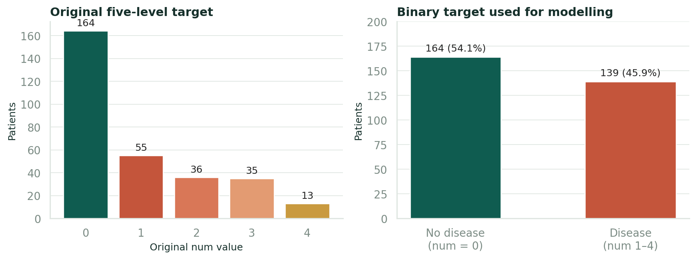
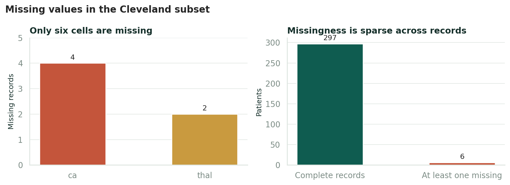
ca and thal contain missing values.Figure 2 shows the correlation matrix for the 13 predictors and the binary target. Correlation is descriptive and is not used for feature selection. Several patterns are consistent with the clinical literature: maximum heart rate is negatively associated with the target, exercise-induced ST depression is positively associated, and the number of coloured major vessels is positively associated. These associations are modest and do not identify a single diagnostic feature.
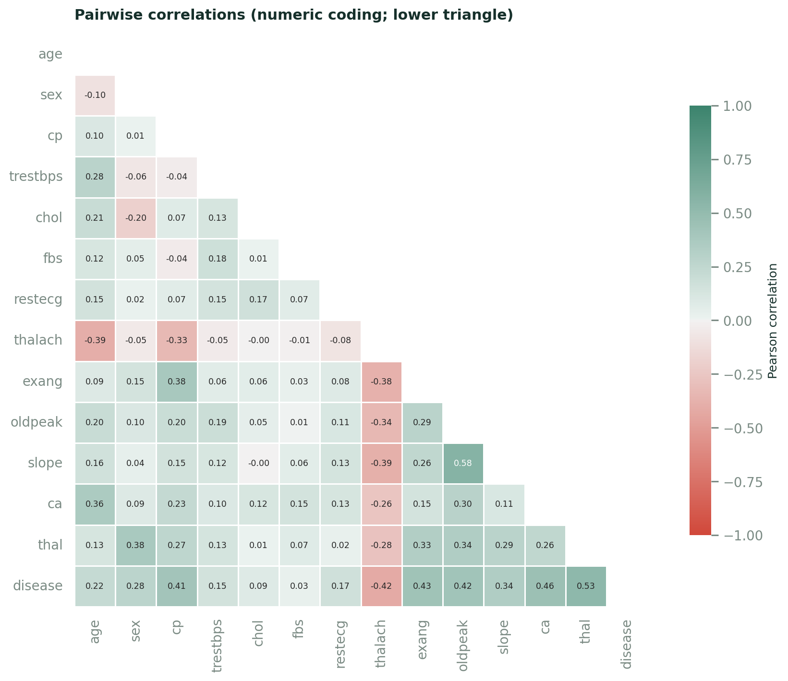
Figure 3 summarises selected relationships between predictors and the binary target. The overlap between classes reinforces why a multivariable model is more appropriate than a single threshold rule.
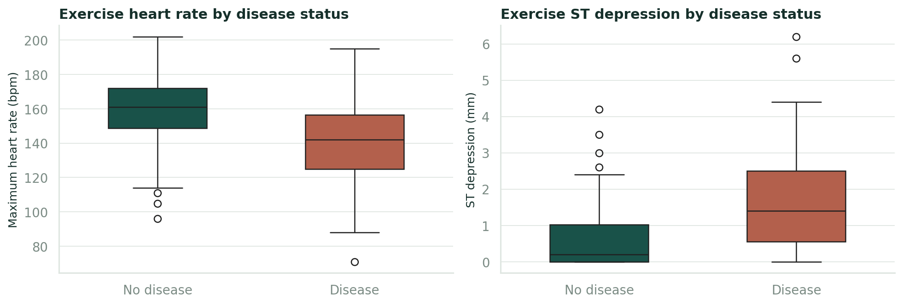
The target is binary: target = 0 for num = 0 and target = 1 for num ∈ {1, 2, 3, 4}. A single stratified 80/20 split with random_state = 42 produces 242 training records and 61 holdout records. The holdout contains 33 no-disease and 28 disease-indicated records. The split indices are stored in artifacts/metrics.json so that the evaluation can be reproduced.
The holdout is created before any model fitting. It is not used for exploratory decisions, feature selection, hyperparameter tuning, threshold selection, or candidate comparison. The only operations performed on the holdout are the final evaluation and the descriptive analyses reported in this document.
Each candidate is a scikit-learn Pipeline containing a ColumnTransformer [3]. The numeric branch includes age, trestbps, chol, thalach, oldpeak, and ca. It applies median imputation followed by StandardScaler. The categorical branch includes sex, cp, fbs, restecg, exang, slope, and thal. It applies most-frequent imputation followed by one-hot encoding with unknown categories ignored.
The important detail is that imputers, scaler, and encoder are fitted only on the data passed to each fit. During cross-validation, each training fold fits its own preprocessing statistics. The holdout is transformed using the statistics learned from the full training partition when the final pipeline is fitted. No target-derived statistic is used in preprocessing.
Hyperparameters were tuned with GridSearchCV and five-fold stratified cross-validation on the training partition, using ROC-AUC as the tuning score. The search spaces were:
class_weight ∈ {None, balanced}.max_features ∈ {sqrt, log2}; class weighting None or balanced_subsample.The tuning score and the final selection score serve different purposes. ROC-AUC is used inside the grid search because it is threshold-independent. The candidate models are then compared by mean cross-validated F1 at the 0.5 threshold, with mean cross-validated ROC-AUC as the tie-breaker. This ordering reflects the applied interest in thresholded disease detection while retaining a ranking-based secondary criterion.
All three tuned candidates are scored on the same five stratified folds of the training partition. The selected model is the one with the highest mean F1. The holdout is opened only after this selection is recorded. The selected pipeline is then fitted on the complete training partition and evaluated once on the holdout. This is the only holdout evaluation used in the report.
The selection rule is intentionally simple. With 242 training records and a small number of candidate families, a more elaborate nested selection scheme would add complexity without resolving the fundamental uncertainty of a 303-record cohort. The important protection is that the holdout is not reused.
For the disease-indicated class, precision is TP / (TP + FP), recall is TP / (TP + FN), and F1 is 2PR / (P + R). Accuracy is reported for completeness. ROC-AUC is computed from the predicted probabilities. The confusion matrix uses the default threshold of 0.5. The Brier score is the mean squared difference between the predicted probability and the binary outcome, with lower values preferred.
A reliability diagram groups predictions into six bins and plots mean predicted probability against observed positive fraction. With 61 holdout patients, the bin-level points are unstable and are reported as descriptive evidence rather than a calibration guarantee.
The logistic model is additive after preprocessing. For a profile, the log-odds are z = β0 + Σ βjxj, where the 25 transformed terms are six standardised numeric features and 19 one-hot indicators. The contribution of each transformed term is βjxj. Contributions are grouped by original feature, the largest absolute term represents each categorical feature, and the four features with the largest absolute rounded contributions are shown. The relative bar length is the absolute contribution divided by the largest absolute contribution, clipped to [0, 1].
This is an exact decomposition of the linear model's log-odds, not a causal explanation and not a Shapley-value approximation. A positive contribution means that the term pushed the score toward the disease-indicated class for this profile. It does not mean that changing the feature would produce a predictable clinical benefit or harm.
The original prototype separated a React/Vite frontend from a FastAPI backend. That architecture is appropriate for local experimentation but adds a second runtime, a second deployment target, CORS configuration, and a duplicated description of the API contract. The final system consolidates the browser application and the inference API into one Next.js App Router application, as shown in Figure 4.
The browser calls three route handlers on the same origin: /api/health, /api/model-info, and /api/predict. The prediction handler validates the request with Zod, applies the exported preprocessing and logistic parameters, and returns a structured response. CORS headers are present for external callers, although the application itself is same-origin. Responses are marked no-store.
The training pipeline remains the source of truth. ml/export_model.py reads the fitted ColumnTransformer and LogisticRegression objects and writes a JSON bundle containing:
The TypeScript implementation in src/lib/model/inference.ts applies the same transformations in the same order. It uses a stable sigmoid form to avoid overflow, computes the log-odds dot product, thresholds at 0.5, and groups local contributions back to the original feature space. Missing ca and thal values take the fitted imputation path; unknown one-hot categories fall through as all-zero indicators, matching handle_unknown = ignore.
The export is committed, so the Vercel build does not need Python. A parity fixture in src/lib/model/__fixtures__/parity.json records the scikit-learn probability and log-odds for every one of the 303 cohort records. The Vitest suite recomputes them with the TypeScript path and requires agreement to nine decimal places.
| Method | Path | Purpose |
|---|---|---|
GET | /api/health | Report route health and model-bundle availability. |
GET | /api/model-info | Return metrics, dataset summary, schema, comparison, plot data, and limitations. |
POST | /api/predict | Validate 13 features and return the classification, probability, threshold, contributions, and disclaimer. |
The prediction contract accepts 13 numerical fields. ca and thal may be omitted or sent as null. Unknown fields are rejected. Invalid JSON returns HTTP 400; field validation failures return HTTP 422 with a structured errors array containing a field name, message, and issue type. Predictions are deterministic for a given input and are never cached.
The interface has five routes: the redirecting root, /predict, /results, /insights, and /docs. The assessment form groups the 13 inputs into patient, measurement, and cardiac-examination sections. It exposes 11 required fields and two optional fields, marks observed ranges, and provides three complete-record presets drawn from the official data. The results page shows the thresholded class, probability, decision threshold, model metadata, four local contributions, and the 13 recorded inputs. The insights page is driven by the exported evaluation artifacts rather than hardcoded numbers. The API reference page documents the three route handlers and includes a copyable example.
Assessment data are held in a React context in memory only. The application does not write patient values to localStorage, sessionStorage, browser history state, a database, or server-side storage. Reloading the results page clears the active assessment. Predictions are not logged with input values. The deployment is public for demonstration but is marked noindex.
The application is deployed on Vercel at cardia-heart-disease-alpha.vercel.app. The repository is github.com/arjun-713/ai-ml-assignment. The root directory is the Next.js app; the framework is detected as Next.js. The JSON bundle is imported into the server function graph, so no filesystem tracing configuration is required. The project pins Node.js 22.x and uses the Next.js 16.4.2 production build.
Table 3 and Figure 5 summarise the five-fold results on the training partition. Logistic regression has the highest mean F1, recall, and ROC-AUC. Random forest trails by 0.053 F1 points; the decision tree trails by 0.075. The fold-level standard deviations are 0.026, 0.042, and 0.062 respectively, which is a reminder that the ranking is estimated with uncertainty even before the holdout is considered.
| Candidate | Accuracy | Precision | Recall | F1 | ROC-AUC |
|---|---|---|---|---|---|
| Logistic Regression | 0.851 ± 0.025 | 0.878 ± 0.061 | 0.792 ± 0.048 | 0.830 ± 0.026 | 0.911 ± 0.018 |
| Random Forest | 0.801 ± 0.029 | 0.802 ± 0.053 | 0.764 ± 0.098 | 0.777 ± 0.042 | 0.899 ± 0.027 |
| Decision Tree | 0.785 ± 0.042 | 0.784 ± 0.046 | 0.738 ± 0.107 | 0.755 ± 0.062 | 0.851 ± 0.043 |
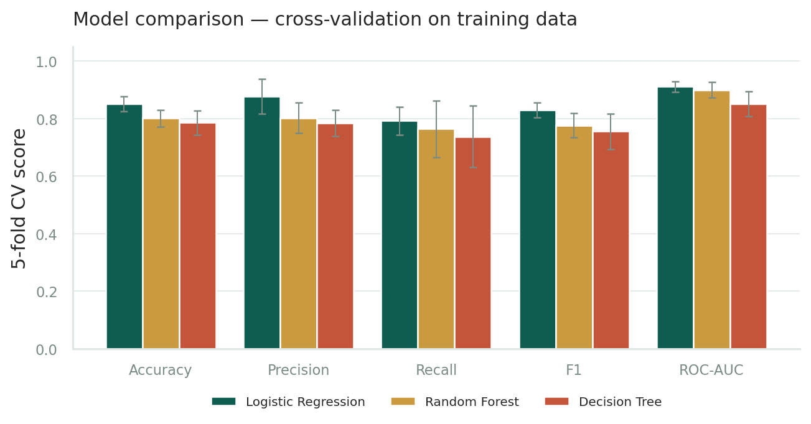
The selected hyperparameters were C = 0.1, class_weight = None, and a 0.5 decision threshold. The random forest selected balanced_subsample, 500 trees, maximum depth 4, max_features = sqrt, and min_samples_leaf = 1. The decision tree selected Gini, maximum depth 3, min_samples_leaf = 1, and balanced class weights. The full search results are retained in artifacts/metrics.json.
The selected logistic model was evaluated once on the 61-record holdout. Table 4 reports the threshold-dependent metrics, the ranking metric, and the Brier score. Figure 6 shows the ROC curve and the confusion matrix.
| Metric | Value |
|---|---|
| Accuracy | 0.8852 |
| Precision (disease class) | 0.8387 |
| Recall (disease class) | 0.9286 |
| F1 (disease class) | 0.8814 |
| ROC-AUC | 0.9610 |
| Brier score | 0.0869 |
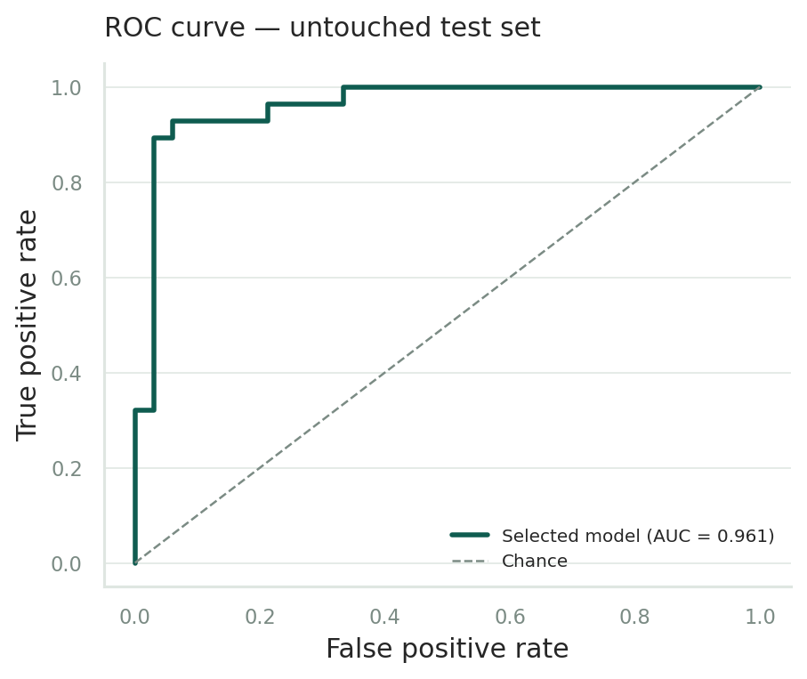
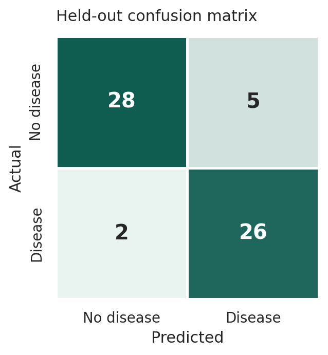
The confusion matrix is TN 28, FP 5, FN 2, TP 26. The model detects 26 of 28 disease-indicated holdout patients, missing two, and flags five no-disease patients. In a screening-oriented framing, the high recall is attractive, but the five false positives are not harmless. The appropriate trade-off depends on the intended downstream action, which is outside this academic project. The 0.5 threshold is a default, not a clinically optimised operating point.
Figure 7 shows the reliability diagram. The Brier score of 0.0869 is encouraging for a small cohort, but the six-bin curve is jagged, especially in the middle and upper bins. With only 61 patients, each point is estimated from a handful of records. The correct conclusion is that the model's ranking is strong on this holdout, while its probability calibration is uncertain and not clinically validated.
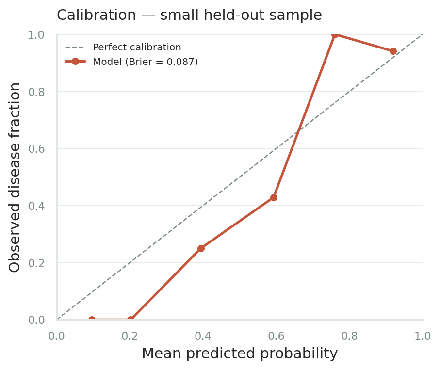
Figure 8 reports permutation importance on the holdout. The largest mean decrease in ROC-AUC comes from ca (0.0773), followed by cp (0.0245), oldpeak (0.0141), exang (0.0122), and thal (0.0115). Several features have small or negative mean decreases, meaning that shuffling them did not reliably degrade holdout ranking. Negative values are possible in permutation importance and should not be interpreted as evidence that a feature is protective.
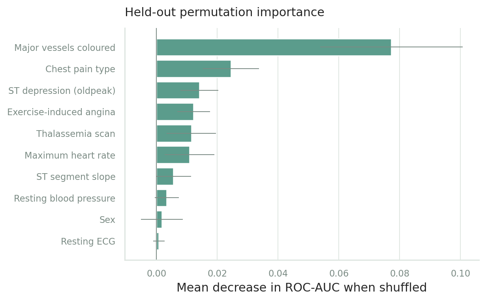
Table 5 lists the largest absolute coefficients on the transformed feature space. These are not directly comparable to raw clinical effects because numeric features are standardised and categorical features are one-hot encoded. The positive coefficient for ca indicates that, holding the other transformed terms fixed, a one-unit increase in the standardised coloured-vessel count is associated with higher log-odds of disease indication. The negative coefficient for maximum heart rate indicates the opposite direction for that standardised measurement. The coefficient for age is close to zero after adjustment.
| Feature | Term | Coefficient | Odds ratio |
|---|---|---|---|
ca | standardised coloured vessels | 0.7025 | 2.019 |
cp | asymptomatic (code 4) | 0.5360 | 1.709 |
thal | code 7 | 0.5027 | 1.653 |
thal | code 3 | −0.4795 | 0.619 |
sex | male | 0.3860 | 1.471 |
thalach | standardised maximum heart rate | −0.3207 | 0.726 |
slope | slope code 2 | 0.3012 | 1.351 |
cp | chest-pain code 3 | −0.2813 | 0.755 |
exang | exercise angina present | 0.2658 | 1.305 |
oldpeak | standardised ST depression | 0.2298 | 1.258 |
Figures 9–11 show the deployed interface. The assessment form supports complete-record presets and explicit missing optional values. The result page shows a live probability and four local contributions. The insights page reads the same evaluation artifacts used in this report. The sidebar health indicator confirms that the model route is online.
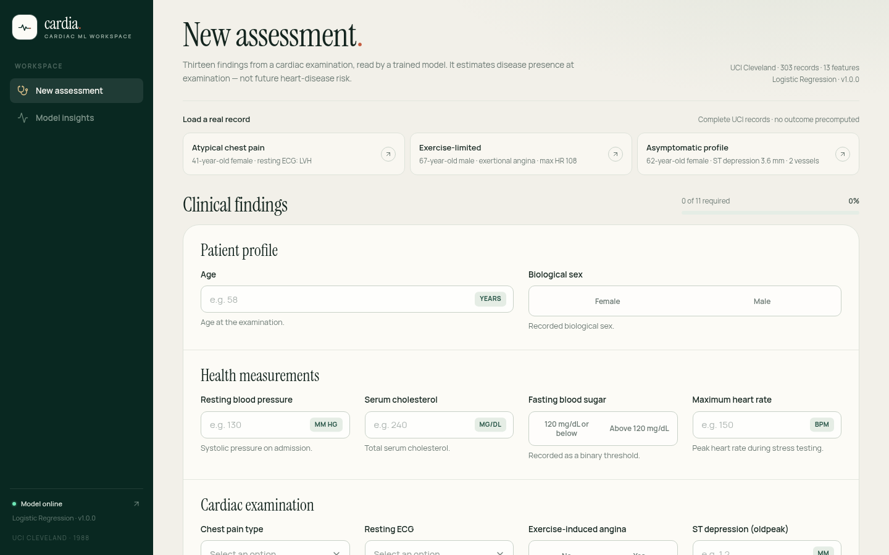
The preset selector carries all 13 values from a real UCI record, but the live form still validates every field and allows ca and thal to be cleared. No request is made until the user chooses Run assessment.
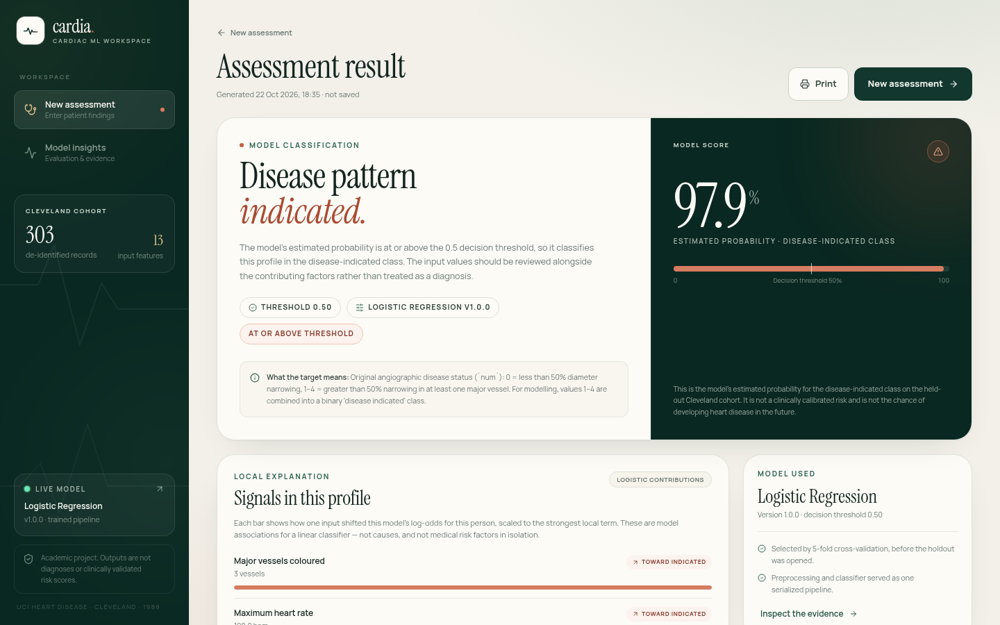
The result page separates the thresholded class from the estimated probability and displays the model version and threshold next to the estimate. The four contribution bars come from the same log-odds dot product used for the prediction, not from a post-hoc surrogate model.
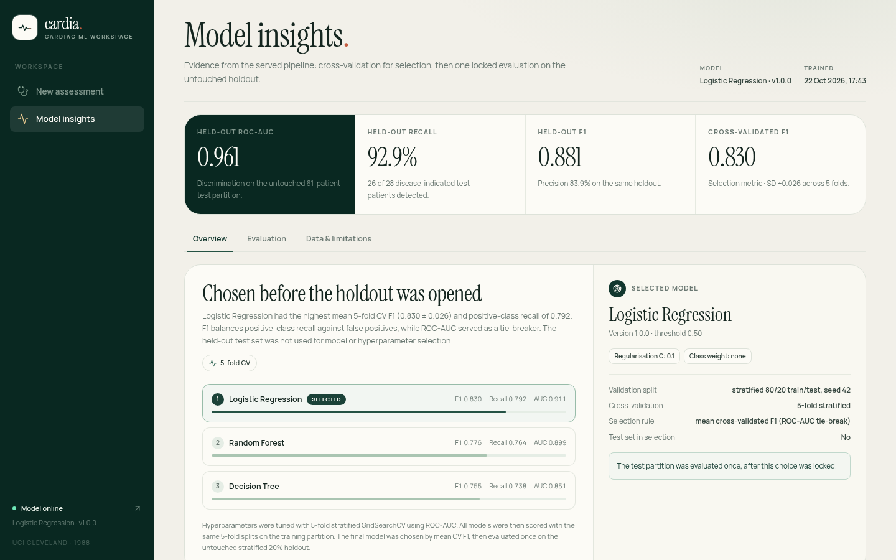
The insights page loads /api/model-info and derives its charts and tables from the committed evaluation artifacts. Its tabs expose cross-validation, holdout, ROC, calibration, permutation importance, coefficient analysis, and dataset summaries, so the page is a rendered view of the evidence rather than a second source of numbers.
The deployed interface was exercised through the production build and the route-handler test suite. Table 6 summarises the checks that matter for the claims in this report. The checks are deliberately functional rather than aesthetic: they verify that the displayed result is produced by the model, that invalid input is rejected at the boundary, and that the result does not persist beyond the browser session.
| Check | Observed behaviour |
|---|---|
| Preset completeness | Three presets each fill all 13 fields and satisfy the documented form contract. |
| Required / optional split | 11 fields are required; ca and thal may be omitted or set to null. |
| Boundary validation | Range and unknown-field errors return HTTP 422; malformed JSON returns HTTP 400. |
| Result lifetime | The assessment is held in React memory only; reloading the results route clears it. |
| API observability | /api/health reports bundle availability and the sidebar displays the live status. |
| Inference parity | All 303 cohort probabilities match scikit-learn to the tested precision of nine decimal places. |
The interface is desktop-first. That choice kept the 13-field clinical form, the contribution panel, and the evaluation dashboard legible during the project, but it is not a claim of mobile accessibility. A production clinical interface would need a separate usability study, responsive layout work, and an accessibility audit.
The results support a modest but coherent conclusion: on this single Cleveland split, a regularised linear model separates disease-indicated from no-disease records well enough to be a useful teaching example. The holdout ROC-AUC of 0.961 and disease-class recall of 0.929 are strong for a 13-feature model. The cross-validated F1 of 0.830 with a fold standard deviation of 0.026 is consistent with the holdout F1 of 0.881, although the holdout estimate is necessarily more uncertain.
The comparison also illustrates why model capacity is not automatically beneficial. Both tree-based candidates can represent non-linearities, but they did not outperform the linear model under the shared preprocessing and tuning protocol. The random forest's cross-validated recall was lower and its fold variance was larger. The decision tree was the weakest and least stable. This does not prove that tree models are inappropriate for the problem; it shows that, at this sample size and with this protocol, the regularised linear model generalised best.
The results do not support clinical deployment. The cohort is small, single-centre, and historical. The holdout has 61 patients, so a single split can move the metrics substantially. No confidence intervals, external validation, temporal validation, or prospective evaluation are reported. The probability outputs are model scores, not clinically calibrated risks. The target is angiographic disease presence at examination, not future heart-disease risk. The interface repeats these points because a polished chart can otherwise create false confidence.
The coefficients and permutation importances are also descriptive. A positive coefficient for ca does not mean that changing the number of coloured vessels would change a patient's outcome. It means that the fitted model uses the recorded value in the direction shown. Correlated features, measurement error, and selection effects all complicate causal readings.
Logistic regression offers three practical advantages in this setting. It is well regularised for a small sample, its decision function is exactly decomposable into local contributions, and its inference path can be reproduced in a few dozen lines of TypeScript. The last point matters for the deployment objective: a tree ensemble would require exporting every tree and implementing traversal, or retaining a Python service. The linear model keeps the production runtime small and auditable.
The choice was not made solely for convenience. The model had the best cross-validated F1 and ROC-AUC among the candidates. The 0.1 regularisation strength is relatively strong, which is plausible for a 242-record training set. The model's coefficients remain interpretable in direction, even though their magnitudes are on a transformed scale.
The migration from a split frontend/backend to a single Next.js application removed an entire runtime from the deployment path. The most important correctness risk was not the UI port; it was reproducing preprocessing exactly. The export therefore includes the fitted imputer statistics, scaler parameters, one-hot categories, coefficients, and intercept, and the parity test compares full-precision probabilities and log-odds on every cohort row. The test suite also exercises the real route handlers rather than mocking the model.
The result is a deployment that is easy to reproduce: clone, install Node dependencies, build. Python is required only to retrain or re-export. The committed JSON bundle is versioned with the model and contains the metadata needed for the dashboard. This separation is a useful pattern for small academic projects that want a simple production story without pretending that the training stack should also be the serving stack.
Internal validity. The fixed split and seed make the evaluation reproducible, but a single split is still a single sample. The holdout metrics could change under a different stratified split. The model selection protocol protects against holdout leakage, but it does not eliminate selection uncertainty across folds.
External validity. The Cleveland cohort is not representative of contemporary or global populations. The features reflect 1980s clinical practice. The dataset is mostly male. The model should not be expected to transfer to another hospital, another era, or another case mix without revalidation.
Construct validity. The binary target collapses a four-level angiographic variable. This is a common simplification, but it discards severity information and treats all values above zero as one class. The model therefore estimates a coarse disease-indicated category, not a continuous severity score.
Calibration. The Brier score is a useful summary, but the reliability diagram is based on 61 patients. The probability outputs should not be read as clinically calibrated event rates.
ca and thal have missing values in training. The interface does not claim general robustness to missing inputs.A rigorous extension would evaluate repeated stratified splits or nested cross-validation to quantify selection and split uncertainty. External validation on another Cleveland-format cohort, or on a contemporary dataset with compatible predictors, would be more informative than further tuning on the same 303 records. Calibration could be studied with isotonic or Platt scaling inside the training folds, but the small holdout would still limit confidence. Decision-curve analysis would connect the model to a specified clinical decision. A prospective study would be required before any clinical claim.
On the engineering side, the export bundle and parity test provide a template for additional models. A future version could support versioned model bundles and a model card endpoint. The UI could expose calibration uncertainty more explicitly, and the API could add authentication if it were ever used outside a public demonstration. None of these extensions would turn the current model into a medical device.
This project implemented an end-to-end heart-disease classification workflow with a reproducible Python training pipeline and a single Next.js deployment. It retained the original UCI Cleveland predictors, handled the six missing cells inside leakage-safe pipelines, tuned three candidate families with five-fold cross-validation, selected logistic regression on training-fold F1, and evaluated the selected model once on an untouched 61-patient holdout. The holdout ROC-AUC was 0.961 and disease-class recall was 0.929, with five false positives and two false negatives.
The deployed system demonstrates that a fitted scikit-learn pipeline can be exported into a transparent JSON representation and reproduced exactly in TypeScript. The 303-row parity test is the central correctness evidence for the serving path. The application keeps assessment data in memory, documents its API, exposes the evaluation evidence, and labels its contributions and limitations rather than presenting the output as a diagnosis.
The most important conclusion is therefore not the headline accuracy. It is the combination of a defensible validation protocol, an auditable training-to-serving boundary, and an explicit statement of what the numbers do not mean. Those properties make the project a useful academic demonstration and a sound starting point for more rigorous clinical research.
[1] A. Janosi, W. Steinbrunn, M. Pfisterer, and R. Detrano. Heart Disease [Dataset]. UCI Machine Learning Repository, 1988. https://doi.org/10.24432/C52P4X.
[2] R. Detrano, A. Janosi, W. Steinbrunn, M. Pfisterer, J.-P. Schmid, S. Sandhu, K. H. Guppy, S. Lee, and V. Froelicher. International application of a new probability algorithm for the diagnosis of coronary artery disease. American Journal of Cardiology, 64(5):304–310, 1989. https://doi.org/10.1016/0002-9149(89)90524-9.
[3] F. Pedregosa, G. Varoquaux, A. Gramfort, V. Michel, B. Thirion, O. Grisel, M. Blondel, P. Prettenhofer, R. Weiss, V. Dubourg, J. VanderPlas, A. Passos, D. Cournapeau, M. Brucher, M. Perrot, and E. Duchesnay. Scikit-learn: Machine learning in Python. Journal of Machine Learning Research, 12:2825–2830, 2011.
[4] T. Fawcett. An introduction to ROC analysis. Pattern Recognition Letters, 27(8):861–874, 2006. https://doi.org/10.1016/j.patrec.2005.10.010.
[5] G. W. Brier. Verification of forecasts expressed in terms of probability. Monthly Weather Review, 78(1):1–3, 1950.
[6] T. Hastie, R. Tibshirani, and J. Friedman. The Elements of Statistical Learning: Data Mining, Inference, and Prediction. 2nd edition, Springer, 2009.
[7] Vercel. Next.js Documentation: App Router, Route Handlers, and Deployment. https://nextjs.org/docs, accessed October 2026.
[8] Vercel. Vercel Documentation: Deploying Next.js Projects. https://vercel.com/docs, accessed October 2026.
The training path uses Python 3.12 and the versions pinned in ml/requirements.txt. From the repository root:
python3.12 -m venv .venv source .venv/bin/activate pip install -r ml/requirements.txt pip install -r tests/requirements.txt python -m ml.train python -m ml.evaluate
The training entry point writes the fitted pipeline, metrics, schema, metadata, model bundle, parity fixture, and plots. The export can be regenerated from an existing pipeline with:
python -m ml.export_model
The application can be run locally with:
npm ci npm run dev
The production build and test commands are:
npm test npm run typecheck npm run lint npm run build npm start
The committed parity fixture allows the TypeScript inference path to be checked without Python:
npm test -- src/lib/model/inference.test.ts
curl -s http://localhost:3000/api/predict \
-H 'Content-Type: application/json' \
-d '{
"age": 63, "sex": 1, "cp": 4, "trestbps": 145,
"chol": 233, "fbs": 1, "restecg": 2, "thalach": 150,
"exang": 0, "oldpeak": 2.3, "slope": 3, "ca": 0, "thal": 6
}'
The response is a JSON object containing the predicted class, probability, threshold, model metadata, up to four local contributions, target definition, and disclaimer. The fields ca and thal may be omitted or set to null; all other fields are required. Unknown fields and out-of-range values produce a structured HTTP 422 response.
The Python suite contains 17 tests covering dataset shape and missingness, target construction, the stratified split, preprocessing isolation, artifact consistency, recomputation of holdout metrics, exported imputer/scaler/encoder parameters, coefficient parity, and the complete 303-row probability fixture.
The TypeScript/Vitest suite contains 48 tests covering form validation, payload conversion, formatting, preset integrity, result rendering, reload semantics, preset loading, reset behaviour, server-side field errors, real route-handler inference, health and model-info responses, optional and null optional fields, unknown fields, range errors, malformed JSON, deterministic responses, no-store headers, CORS preflight, and the 303-row scikit-learn parity check. The production build is a separate required check.
Report generated from the repository artifacts and the deployed application on 26 October 2026. The live deployment is cardia-heart-disease-alpha.vercel.app; the source is github.com/arjun-713/ai-ml-assignment.